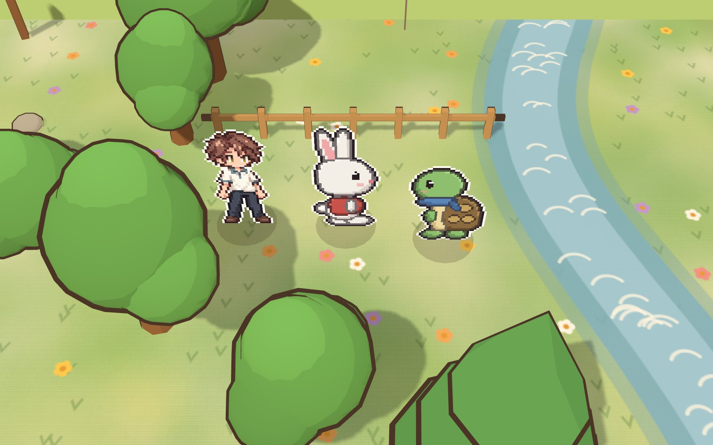

토끼와 거북이를 만나 함께 고민하고, 내 생각을 기록장에 남겨요.
다 읽고 나면 나만의 세계를 만들어 친구에게 보여 줄 수 있어요.

네 곳 어디서든 시작할 수 있어요.
아바타·기록장을 만들어 내 이름으로 책에 들어가요. 기록장은 학생 컴퓨터에만 저장돼요.
인물의 마음을 묻는 질문, 차례대로 누르기 같은 활동이 이야기 사이사이에 있어요. 정답 채점 없이 생각을 남겨요.
배운 점과 다짐이 기록장에 쌓여요. 이어서 나만의 이야기 세계를 만들어 세계 파일로 친구와 나눠요.
이 누리집은 개인정보를 모으지 않아요. 기록장과 만든 세계는 내 컴퓨터(파일·브라우저)에만 저장돼요.
같은 교실 와이파이에서 쓰는 교실 서버판(반 도서관 올리기 등)은 선생님 컴퓨터에서 켜요.